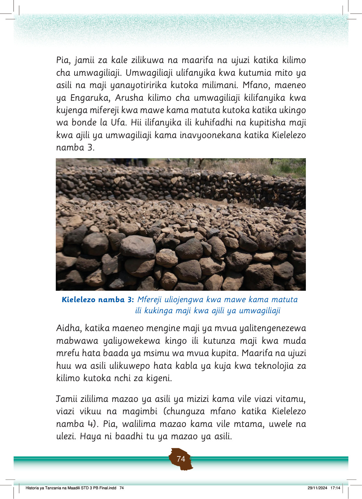

Viazi vya kuning’inia vimewekwa pamoja, na kipande kimoja kimekatwa kuonyesha ndani yake.
Viazi vya kuning’inia
Magimbi mawili yanaonekana, na moja limekatwa kuonyesha sehemu ya ndani.
Magimbi
Viazi vitamu kadhaa vya rangi ya waridi vimewekwa pamoja.
Viazi vitamu
Viazi vikuu vitatu vinaonekana, viwili vimekatwa kuonyesha sehemu ya ndani nyeupe.
Viazi vikuu
Kielelezo namba 4: Baadhi ya mazao ya asili
Maarifa na ujuzi wa asili katika uvuvi vilifanyika kwa kutumia nyavu, ndoano, madema, mitumbwi na mitego ya asili ya kuvulia samaki kama vile matenga.
Chunguza Kielelezo namba 5 na 6 kama mifano ya vyombo vilivyotumika katika uvuvi.
Maarifa na ujuzi wa asili katika uvuvi
Watu wawili wako kwenye mtumbwi wakivua samaki baharini kwa kutumia fimbo na kamba. Samaki mmoja amenasa kando ya mtumbwi.
Kielelezo namba 5: Maarifa na ujuzi wa asili wa jamii katika uvuvi
Zoezi la 2
1.
Eleza maarifa na ujuzi mwingine wa asili katika kilimo katika maeneo yanayokuzunguka.